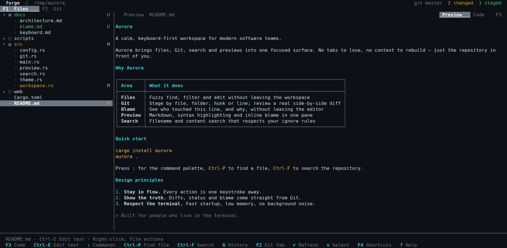
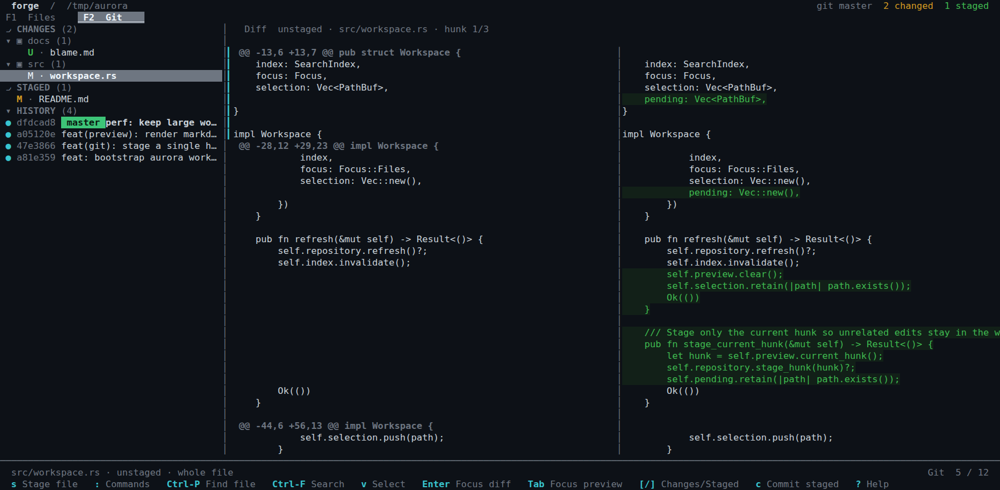
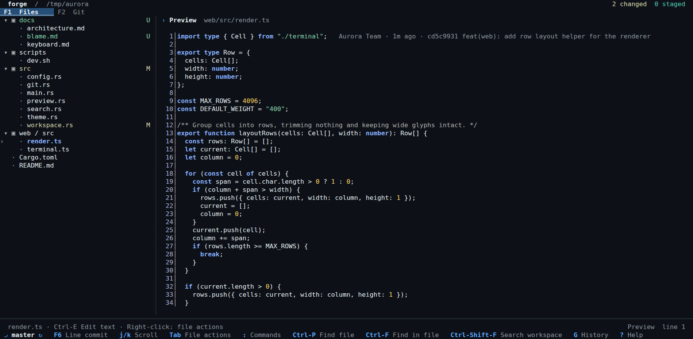
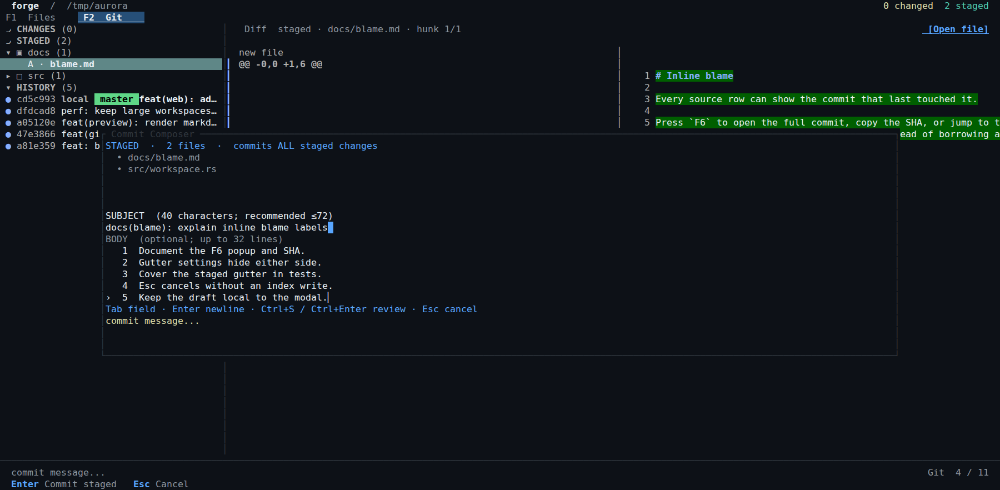

File manager
Browse directories with Git status, file search and fast keyboard navigation.
- Create, rename, copy, move and delete
- File-name and content search
- Built-in text editor
Rust · Terminal native · MIT
A modern terminal file manager and Git workspace. Browse your project, inspect code, review diffs and commit — without switching apps.
↔ Swipe horizontally · Tap to open full image

01 / One workspace
Forge combines a file manager and Git client in one SSH, tmux, or local terminal workspace.
Browse directories with Git status, file search and fast keyboard navigation.
Review changes next to files and stage precisely what belongs in your commit.
Read source or Markdown without leaving the terminal.
02 / Screenshots
Captured from the running Forge terminal application — no concept mockups.
↔ Swipe to inspect · Tap for full image

↔ Swipe to inspect · Tap for full image

↔ Swipe to inspect · Tap for full image

03 / Get started
Prebuilt releases for Linux x86_64/aarch64 (glibc) and macOS Intel/Apple Silicon. No Rust toolchain needed.
curl -fsSL https://creature-studio.github.io/forge/install.sh | sh
cd /path/to/your/repo
forge
forge update --checkReview the installer, download a release, or read the README and documentation. The installer verifies SHA-256 checksums.